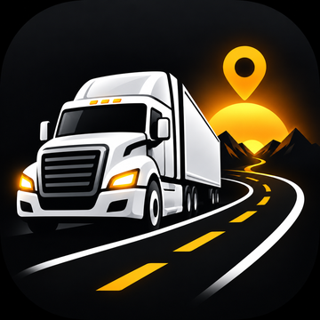

GET ME OUT OF THIS TRUCKPrivacy Policy
Effective October 25, 2026
The short version: the app uses your location to find staging spots and nearby things to do. That's it.
No accounts, no ads, no tracking, no selling your data. Your saved rig location stays on your phone. We don't keep a history of where you've been.
This policy covers the Get Me Out of This Truck iPhone app and the website at truck.spokanistansaga.com (together, "the app"). The app is made and run by Dima Yermakov ("we", "us"). Questions: support@getmeoutofthistruck.com.
What the app uses, and why
- Your location. When you tap Park the Rig, Use Current Location, or Get Me Out, the app reads your phone's location (with your permission). If you type a location instead, the app uses that place.
- What you type in the location search. Used to suggest matching places as you type.
- Your adventure choices. How long you've got, how you're getting around, and what you're in the mood for.
These are used only to show you staging spots and adventure suggestions. They are sent to our server, which passes them to the services listed below to get results, then sends the results back to you. Our server does not store your location, searches, or choices.
What stays on your device
Your saved rig location (and on the website, the adventure location you picked) is stored only on your phone or in your browser. It is never sent to us when you save it. Get Me Back opens your Maps app with directions to it. Deleting the app, or clearing your browser's site data, deletes it.
Services that process your requests
To answer your requests, our server shares the information above with:
- Google Maps Platform (place search and details, to find staging spots and check that places are open). Google handles this data under the Google Privacy Policy.
- OpenAI (to write the adventure suggestions). It receives the location (coordinates or the place name you picked) and your adventure choices, but nothing that identifies you. OpenAI handles API data under its privacy policy and API data-usage terms.
- Cloudflare (the network that securely connects the app to our server). Cloudflare processes connection data such as your IP address to deliver and protect the service, under the Cloudflare Privacy Policy.
We don't share your information with anyone else, and we never sell it.
Technical logs
Like most online services, our server keeps basic technical logs, such as your IP address, the time of a request, and which feature was used. These logs don't contain your location or what you searched for. We use them only to keep the service running and protect it from abuse, and we keep them only as long as needed for that.
Calls and maps
When you tap Call or Open in Maps, the app hands off to your phone's Phone or Maps app. We don't see or record those calls or trips. Paid truck parking is arranged directly between you and the lot operator or booking service, under their own terms and privacy policies.
What we don't do
- No user accounts or sign-in.
- No advertising and no advertising IDs.
- No analytics or tracking across other apps and websites.
- No selling or renting of personal information.
Your choices
- You can turn location access off at any time in your phone's settings (Settings → Privacy & Security → Location Services), or in your browser. You can still type a location instead.
- Because we don't keep your location, searches, or choices, there's normally nothing for us to delete. If you have a privacy question or request, email us and we'll help.
Children
The app is made for adult drivers and suggests things like breweries. It is not directed to children under 13, and we don't knowingly collect information from them.
Security
Connections between the app and our server are encrypted. No system is perfectly secure, but we keep what we handle to a minimum, and that's the best protection there is.
Changes
If this policy changes, we'll update it here and change the effective date at the top. If a change is significant, we'll also mention it in the app.
Contact
Dima Yermakov
support@getmeoutofthistruck.com